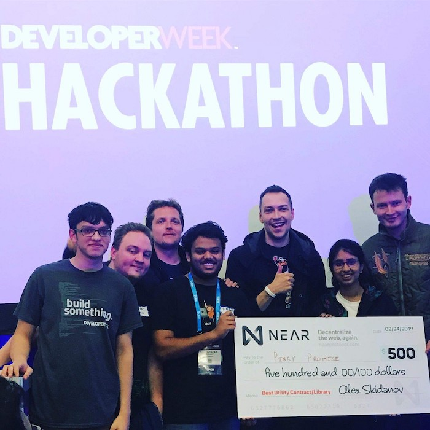
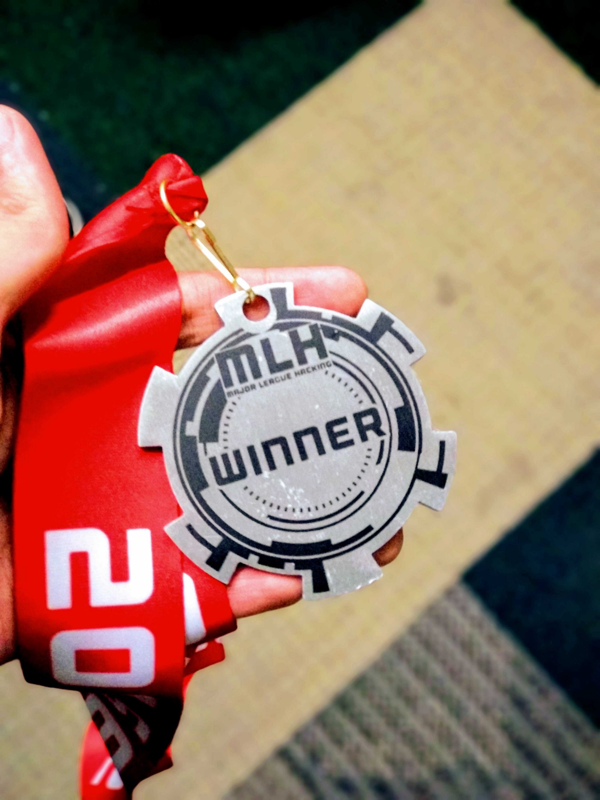

6 minutes
A Hacker’s Guide to Winning Hackathons

Hackathons are exhilarating. Nothing can eclipse the sheer adrenaline pump of building something in 24–36 hours. I was a visiting student at UC Berkeley for the Spring’19 semester. Berkeley is really close to the Silicon Valley and that gave me an amazing opportunity to take part in and win these 3 amazing hackathons:
-
LA Hacks ’19 hosted by UCLA
-
San Francisco DeveloperWeek Hackathon ’19 (America’s largest challenge-driven hackathon)
-
SF Hacks ’19 (part of Major League Hacking)
So, what did I learn from these hackathons in California and other hackathons I’ve won in India? Let’s talk about the strategies that helped me to win.
The Team
Depending upon the hackathon, the team size may vary but most hackathons have a team limit of 4 people. The ‘Dream Team’ for me is to have one Front-End developer, a Back-End developer, ‘The guy who can do everything’ (this is the guy who knows Linux like the back of his/her hand) and someone who knows ML/Blockchain/IoT/AR/VR,etc.
‘The Idea’
Your idea is what makes the product great even if you are not able to build it completely. Spend some serious amount of time thinking about a great idea which solves a real problem. If your idea does not solve a problem, then think of a new one which does! A product which actually solves a problem and has a social benefit will always win against something which is just cool (no matter how awesome it is). Once you are satisfied with the idea of what you want to build, chalk out the tech stack and create a project roadmap.
What does NOT work in a Hackathon
-
Do not waste time by creating the most complicated neural network or the most meticulous smart contract. If there’s an API which does that, then use the API. There’s no brownie points for writing your own neural network rather than using an API from Google Cloud or AWS.
-
Avoid front-end frameworks if you’re not very comfortable with it. Old school HTML+CSS works just as good.
-
Do not add unnecessary features to your app or worse unnecessary technology if there’s no need to (a.k.a AI or blockchain). Keep it simple, stupid!
-
If there are multiple sponsor prizes in a hackathon, do not run after more than 3 or 4 prizes.
-
Live demos — I’ve seen so many perfectly working demos fail on stage that it’s almost a joke. Record a video or hardcode if you’re unsure!
What works in a Hackathon
-
How you are solving the problem is essential, research well.
-
React(HTML+CSS works just as good)+Firebase+AWS Lambda+TensorFlow = ❤
-
Deploy it on the cloud (localhost is fine too but if you want to show it on your mobile as well then cloud makes a lot more sense)
-
Focus on the front-end just as much as the back-end. The front-end is what everyone sees, so make it look good. There are a lot of things for which you don’t need a back-end and simple HTML does the job.
-
Use APIs!! (GCP and AWS probably has an API for everything you need — object detection, video analytics, NLP, ton of IoT stuff, Map, etc). In a hackathon, time is limited, use it wisely.
-
Be open to learning new things in a hackthon. Don’t be afraid to watch a tutorial on YouTube even if it’s for beginners. I had never worked on Amazon Alexa before but I learnt it in a few hours because we needed it.
-
If you’re using JSON payload then you can see if you’re making a successful post request by sending a post request to https://www.jsonstore.io/. Keep looking for hacks like these, it’s a hackathon after all! There a lot of neat tricks out there but that’ll almost be another long blog post.
-
It’s okay to catch a few hours of sleep (take turns to sleep since there’ll come a time when you’ll be waiting for your teammate to build his/her part of the product pipeline)
-
It’s fine to hard-code a particular functionality** **if things go south (just make sure you hide it really well :P)
-
**Know your judges — **(discussed later)
The Secret Sauce
The secret sauce is what makes a good product great. At SF Hacks we decided to build a platform where you can place everyday bets with your friend and the bet along with the wager is stored on the blockchain. What we had to essentially do was to automate the process of making smart contracts between 2 parties. Now, this is fine but it just did not have the oomph we were looking for. Enter Amazon Alexa.
We built an Amazon Alexa skill so that you can just talk to your Alexa and all the hard work (writing and deploying the smart contract on the Ethereum network) is automatically done behind the scenes. When we demoed this on stage, people found it really interesting. Not only was this cool but it made placing everyday bets on Ethereum really easy. No one wants to have an app or open a website to place a friendly bet but Alexa makes sense since it’s right there in your living room. Find a secret sauce for your product which truly highlights your product’s strength (in this case it was the convenience of placing a bet on the blockchain).
The Pitch
The product pitch is what makes or breaks your product. Do not try to make a presentation about your product (unless it’s a sponsor hackathon where you’re trying to solve a problem statement), let the product speak for itself (this is a hackathon, not a startup battlefield). The judges will only know what you tell them about your product, so if you know there’s a loose end in your product which might come up during Q&A, then try to avoid it during the presentation.
If you have a product feature which keeps the audience interested in your pitch and makes the judge go ‘wow’ then there’s nothing quite like it. The key is to keep your pitch interesting and energetic! Do not bore the audience about the supercalifragilisticexpialidocious tech you’re using to solve the problem. Talk about the problem and give a walkthrough of your solution. Leave the tech jargon for the Q&A session.
“People don’t want a quarter inch drill, they want a quarter inch hole.”
Know your judges
Knowing your audience is key and a hackathon is no different.
-
That CTO guy — Talk is cheap. Show me the code.’ Talk about the complexities and the challenges you faced and how you overcame those challenges. Discuss about scalability and your design choices.
-
Judges who are Investors/Business people — They really want to see if your hack can make it big in the real world. Talk about the business model and how it benefits the society. Don’t talk numbers unless you’re sure.
-
The API Judge — They love it when you use a lot of creativity in making a non-core function extremely interesting a.k.a gamification. Integrate their API in a unique way and optimize it such that it almost unlocks a whole new possibility. Look for sponsor prizes most people would avoid.
Selling is key. Convince the judges that your product is just what they are looking for. Fake it till you make it.
Winning is not everything but it feels good when you win :P
Happy Hacking!
1221 Words
2019-06-18 05:30 +0530